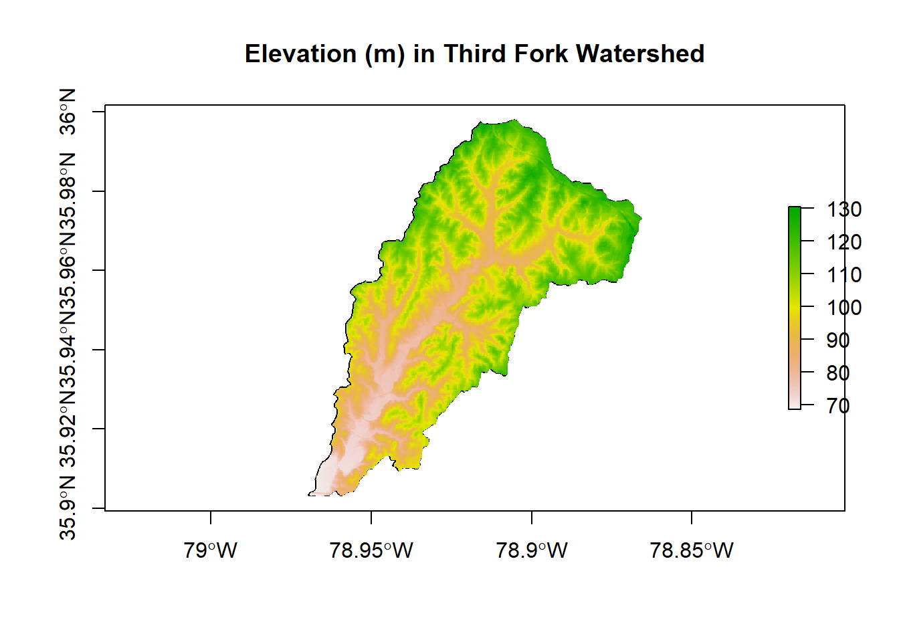
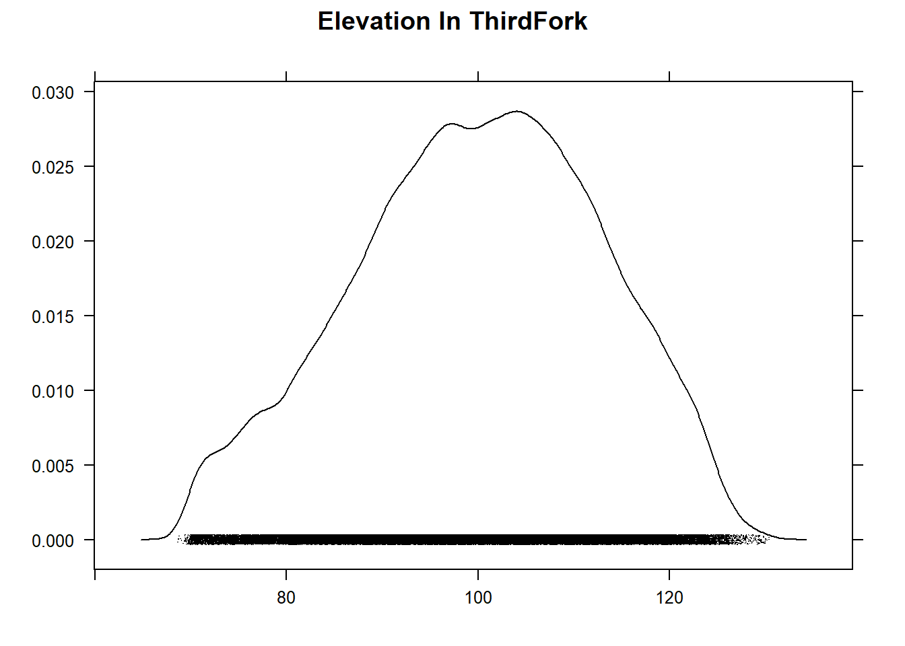
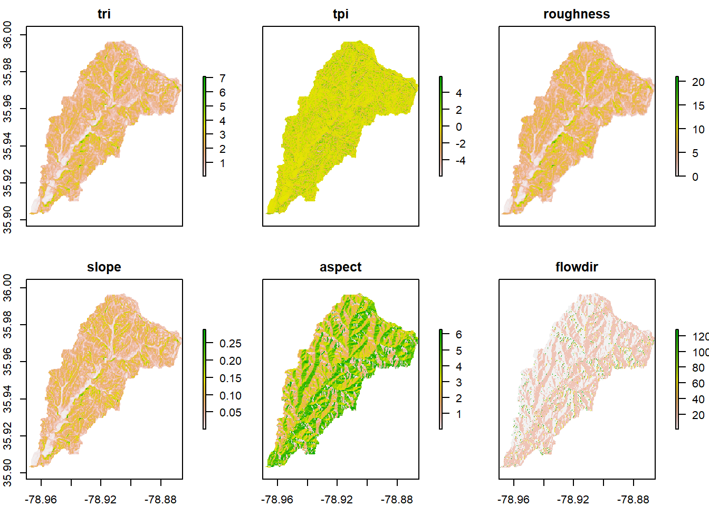

Spatial Operations 1
Lesson Goals
- Familiarity with some typical topological operations (spatial subsetting, proximity, aggregation, spatial joins, dissolve) using
sf - Familiarity with some typical raster operations using the
rasterpackage and combining withvectordata
Spatial Subsetting
Let’s return to the Durham Open Data we grabbed in the previous section - the parks and trails layers in particular. A typical spatial question we might ask of the data is ‘what trails go through parks in town?’ You should already have loaded but code below loads again, and shows the simplest of all methods to perform this spatial subset using sf:
library(sf)
trails <- read_sf("https://opendata.arcgis.com/datasets/ef3715bf76b54acead5c566bcf34db78_6.geojson")
parks <- read_sf("https://opendata.arcgis.com/datasets/0cbc4dced5a944458f634619dad8356f_8.geojson")
plot(trails$geometry, col='green', axes=T)
plot(parks$geometry, col='blue', add=T)
trails_in_parks <- trails[parks,]
plot(trails_in_parks$geometry, col='red', lwd = 2, add=T)
title(main='Parks and Trails in Durham')
Notice the warning we got about planar coordinates - should we be concerned about that?
Proximity calculation
Here’s a gist I have of a function I’ve used based ongDistance in geos package working with sp points and polygons - we’ll try to implement something similar in sf:
Let’s grab a geojson of bike parking locations from Open Data Durham, and then let’s try to find and map all the bike parking that is within a half-mile of a park:
library(dplyr)
library(ggplot2)
bike_parking <- read_sf("https://opendata.arcgis.com/datasets/5353852efa6e4b4cb7177f9060b46168_0.geojson")
bike_parking <- st_transform(bike_parking, crs=26917)
parks <- st_transform(parks, crs=26917)
sel <- st_is_within_distance(bike_parking, parks, dist = 804) # conversion of miles to meters - why am I using meters here?
summary(lengths(sel) > 0) ## Mode FALSE TRUE
## logical 38 222Using sf and dplyr together
Now say we’re concerned it might rain. I want to know where the covered bike parking is that is near parks and along trails. Given what we know so far, see if you can figure out how to:
- subset the bike parking near parks to records within 400 meters of trails
- subset to just those bike parking locations that are covered
- plot the results with ggplot
If you’re comfortalbe with dplyr, try doing this with dplyr. Don’t look at the code below unless or until you get stuck. Then after you figure it out, see how similar your results are to what is below - and look at how coord_sf is being used to control x and y axes based on sf coordinates. How could we zoom in more?
trails <- st_transform(trails, crs=st_crs(parks))
bike_parking_near_parks_and_trails <- bike_parking_near_parks[trails, ,op = st_is_within_distance, dist = 804]
# dplyr chained operation
covered_bike_parking_near_parks_and_trails <- bike_parking_near_parks_and_trails %>%
dplyr::filter(Covered == 'yes')
ggplot() +
geom_sf(data=covered_bike_parking_near_parks_and_trails, fill = "red", show.legend = F, color="red") +
geom_sf(data=trails, color="blue") +
geom_sf(data=parks, fill = "green", color="green") +
labs(title="Covered Bike Parking Near Parks \nAlong Trails in Durham") +
coord_sf(xlim = st_bbox(parks)[c(1,3)],
ylim = st_bbox(parks)[c(2,4)])+
theme_bw()Spatial Joining and Aggregating
Let’s grab a couple more sample data sets from Open Data Durham. We’ll’s use tidycensus census tracts as we did in previous module, and we’ll join this to survey data by block group from Open Data Durham to evaluate survey point data at the block group level by census tract.
library(dplyr)
library(ggplot2)
library(tidycensus)
options(tigris_use_cache = TRUE)
durham_tracts <- get_acs(state = "NC", county = "Durham", geography = "block group",
variables = "B19013_001", geometry = TRUE)
durham_survey <- read_sf("https://opendata.arcgis.com/datasets/b38dd29e5a774dcba28d30c93141bce9_0.geojson")
# project both datasets:
durham_tracts <- st_transform(durham_tracts, 26917)
durham_survey <- st_transform(durham_survey, 26917)
ggplot() +
geom_sf(data=durham_survey, aes(col=Q3f_Quality_of_your_neighborhood)) +
geom_sf(data=durham_tracts , fill = NA, show.legend = F, color="black") +
labs(title="Durham Survey Results - \n Neighborhood Satisfaction \n by Census Block Group") +
theme_bw()
# Let's restrict survey data, which has numerous fields, to just field of interest - note how dplyr retains geometry without us explicitly having to select it. Also we can rename as part of our dplyr select statement.
survey <- durham_survey %>%
dplyr::select(ID, Year, Neighb_Qual = Q3f_Quality_of_your_neighborhood)
# Spatial Join
survey_blkgrps <- st_join(durham_tracts, survey) # st_intersects is the default
# Aggregation
survey_blkgrps %>%
group_by(GEOID) %>%
dplyr::summarize(NQual = names(which.max(table(Neighb_Qual, exclude=NULL)))) %>%
ggplot() + geom_sf(aes(fill=(NQual))) +
ggtitle("Neighborhood Quality Perception \nby Census Block Groups") +
theme_bw()
Dissolve
We can take a quick look at using a spatial dissolve and then re-aggregate our result to see if there is a difference at another spatial level by dissolving to the tract level - we do this dissolve simply by using dplyr group_by and summarize functions with an sf object! Note that we could pull down tidycensus at tract level, but instead we want to look at running a dissolve to get from block group to tract level
survey_blkgrps %>%
mutate(Tract = substr(GEOID, 1,9)) %>%
group_by(Tract) %>%
dplyr::summarize(NQual = names(which.max(table(Neighb_Qual, exclude=NULL)))) %>%
ggplot() + geom_sf(aes(fill=(NQual))) +
ggtitle("Neighborhood Quality Perception \nby Census Tracts") +
theme_bw() 
Exercise Try exploring another data set from Open Data Durham, or use existing data, to put together another spatial subset, join, or aggregation - try aggregating with different data, use a different aggregation method, or perhaps try other types of joins (st_intersects is the default, but check ?st_join for other options.
Raster - Raster-Vector Processing
Now let’s look at an example of some raster processing. First, we’ll load the Third Fork watershed shapefile I have in our course GitHub repository:
## Reading layer `Third_Fork' from data source `F:\GitProjects\R-User-Group-Spatial-Workshop-2018\data\Third_Fork.shp' using driver `ESRI Shapefile'
## Simple feature collection with 1 feature and 21 fields
## geometry type: POLYGON
## dimension: XY
## bbox: xmin: -78.96945 ymin: 35.90316 xmax: -78.86583 ymax: 35.99798
## epsg (SRID): 4269
## proj4string: +proj=longlat +datum=NAD83 +no_defsFedData still uses sp rather than sf objects, so we could have loaded our shapefile template in with readOGR from rgdal, but we’ll just convert from sf to sp to demonstrate:
ThirdFork_sp <- as(ThirdFork,'Spatial')
# We can pull in elevation data for this template watershed with FedData
NED <- get_ned(template = ThirdFork_sp,
label = "ThirdFork")
raster::plot(NED)
plot(ThirdFork_sp, add=T)The get_ned function from FedData grabs a corresponding online tile of NED (National Elevation Data) from Amazon - you can simply type get_ned at console to examine the function and see how it works.
We saw the getData function in the raster package in the SpatialObjects section. Is get_ned from FedData any differet? We can mask to the watershed as we did earlier - notice we don’t need to use crop then mask…why?
library(raster)
NED <- mask(NED, ThirdFork_sp)
plot(ThirdFork_sp, main="Elevation (m) in Third Fork Watershed", axes=T)
plot(NED, add=TRUE)
The RasterViz package has some neat additional visualization methods for rasters:

p <- levelplot(NED, layers=1, margin = list(FUN = median))
p + layer(sp.polygons(ThirdFork_sp, lwd=2, col='black'))We can easily do some terrain analysis with raster as well:
wat_terrain <- terrain(NED, opt = c("slope","aspect", "tri",
"tpi","roughness","flowdir"))
plot(wat_terrain)
Quick Exercise What kind of object did terrain return? How would you get the projection for our ‘NED’ raster? The min, max, standard deviation of NED, mean as single values? Same for our ‘wat_terrain’? Play with on your own and look at code if you need to